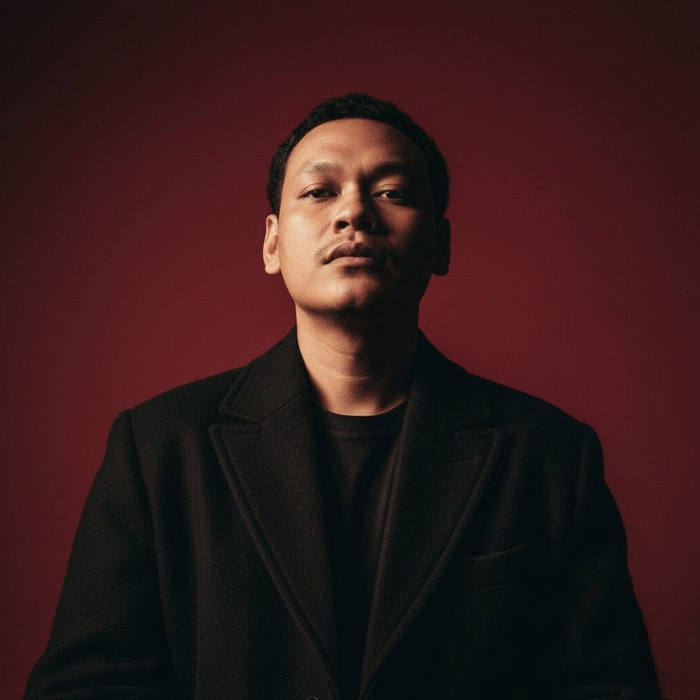

Web Developer · Problem Solver
Saya membangun website ringan, cepat, dan sesuai konteks — bukan template generik yang terlihat sama dengan ribuan web lain.
Sekarang fokus ke:

01 / Tentang
Memahami konteks bisnis sebelum menulis satu baris kode
Tanpa framework berat. Vanilla JS, tanpa library tak perlu. Web tetap berjalan mulus di HP kentang sekalipun.
Pernah bekerja di lapangan — sales engineering, audit sistem, stok & distribusi. Saya paham pain point yang sering diabaikan developer.
Tidak monoton. Setiap proyek punya karakter sendiri — tema galaksi, tipografi serif modern, micro-interaction yang sopan.
Kode bersih, accessible, SEO-friendly. Admin panel dengan dashboard yang logis, bukan hanya tabel yang berantakan.
02 / Keahlian
Teknologi yang saya pakai sehari-hari
HTML, CSS, Vanilla JS — tanpa boilerplate berlebihan, performa tetap prima.
PHP/Laravel, Node.js — REST API, autentikasi, CRUD solid.
MySQL, PostgreSQL, Supabase — desain relasional yang efisien.
Admin panel, dashboard stok, POS, monitoring, audit SI (COBIT).
03 / Proses
Alur kerja yang jelas di setiap tahap
Pahami masalah bisnis, target user, dan scope yang realistis.
Wireframe dan visual yang sesuai brand — bukan template asal.
Coding bersih, tanpa dependency tak perlu, performa diperhatikan.
Testing, deployment, dan dokumentasi — siap pakai dan mudah dirawat.
04 / Proyek
Beberapa contoh karya nyata
Sistem informasi internal perusahaan dengan manajemen asset, ticketing, dan laporan real-time. Sudah beroperasi dan dipakai sehari-hari.
Website profil komunitas Indonesia Drum Corps Association Kota Bekasi. Berisi beranda, profil unit, agenda kegiatan, prestasi, galeri foto dengan lightbox, galeri video, mitra, struktur organisasi, dan FAQ.
Sistem manajemen gudang dengan pencatatan barang masuk/keluar, stock opname, mutasi antar lokasi, dan validasi stok tidak minus. Dashboard analitik dengan Chart.js, multi-PT filtering, export Excel/PDF. Skema relasional, antarmuka SPA tanpa reload.
05 / Testimoni
Yang sudah bekerja sama
web berjalan dengan lancar dan kalau minta revisi bisa sangat cepat di selesaikan